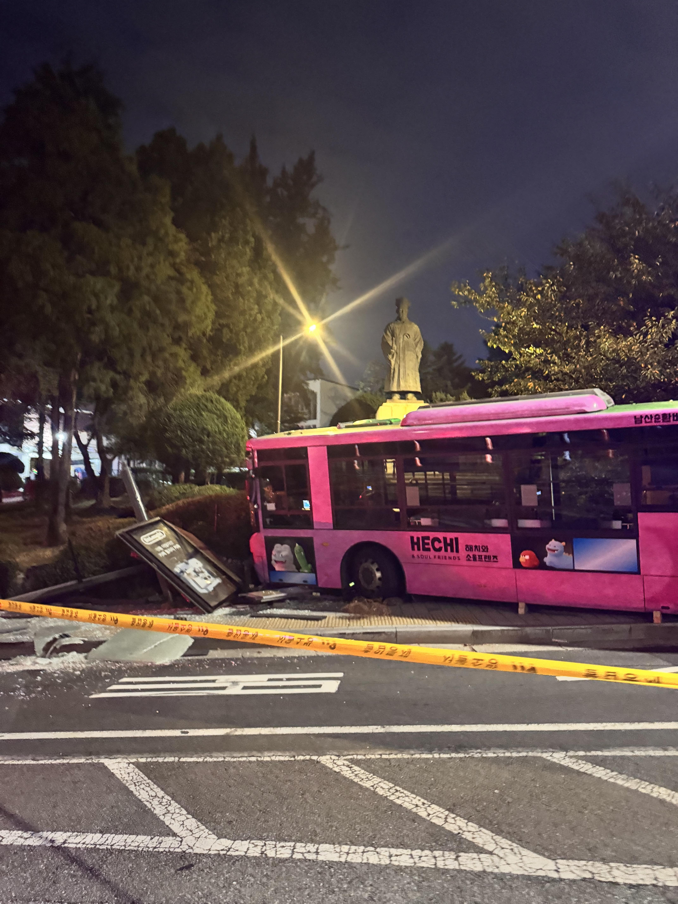
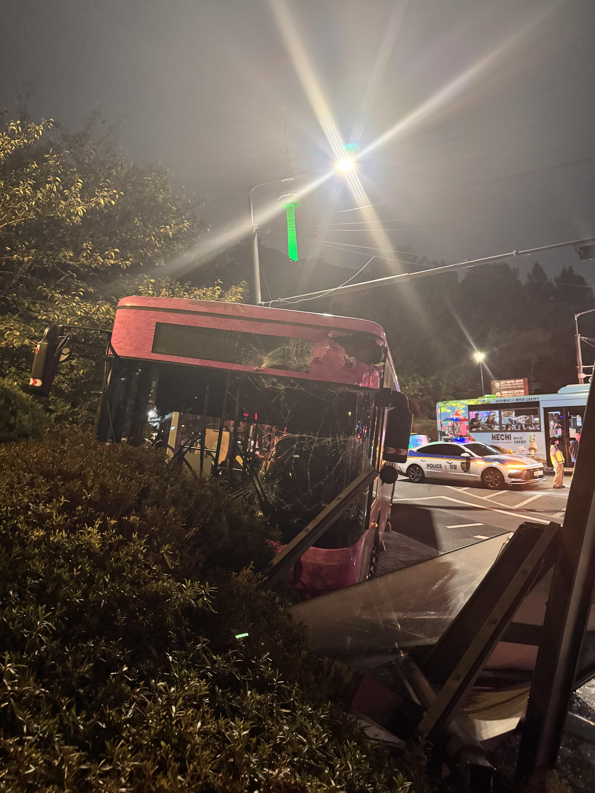
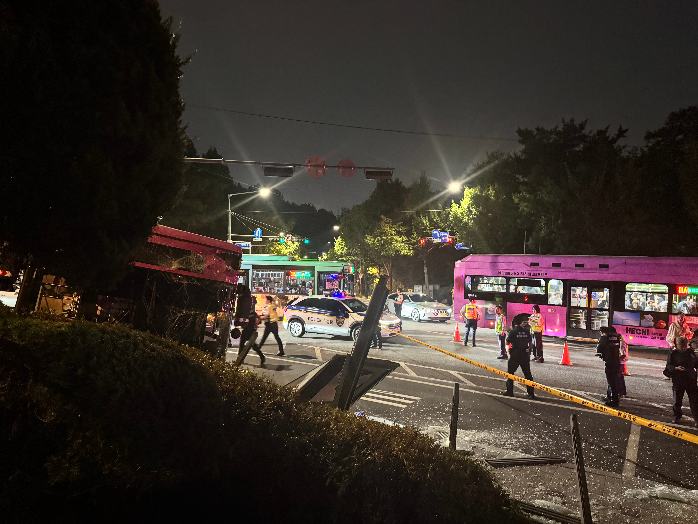

01B버스
경상(?) 만 있다는거 같긴한데...
다음에 온 같은 버스 승객이 부셔진거 쳐다보는게 좀 무섭네



01B버스
경상(?) 만 있다는거 같긴한데...
다음에 온 같은 버스 승객이 부셔진거 쳐다보는게 좀 무섭네
소울 프렌즈 만날뻔;;
남산순환 전기버스? 인가? 탔을때 와 여길 오르내리네? 싶을정도로 빡세게 올라가던대 내려오다 브레이크 문제라도 생겼나?
저기는 남산도서관 바로 앞쪽 도로라서 내리막도 아닌데... 기사님이 졸음운전 하셨거나, 아니면 뭐 피하려고 급선회했거나 그랬을듯
예전에 바닥에 미끄럼방지용으로 빨간거 발랐는데 그게 되려 더 미끄러워서 사고난적있지않나?
그건 남산이 아니었나..?

진우형 만나러 가는길이었나
어쩌다가 사고난겨 ㄷㄷ
무섭네
밤중 조용해진 경복궁역에서 경찰차 6대 씩이나 갑자기 지나가나했더니 저런 이유구나.
해치가 화재 위험성을 발견하고 바로 진압에 들어간거지
한국 요괴 Goat 해치 당신입니까
안돼 ㅠㅠㅠㅠㅠ
사자보이즈 이 미친새끼들
브레끼 고장인가?
ㅅㅂ 오늘 올라갈때 저거타고 내려올땐 케이블카 탔는데 기사님 시발시발 거리면서 운전하시던데 나름 운전은 조심히 하시더라
또발진이냐?
바나나 밟았나봐
고장났다 이기
막짤에 외국인 타있는듯?
아무튼 뭔 일이여